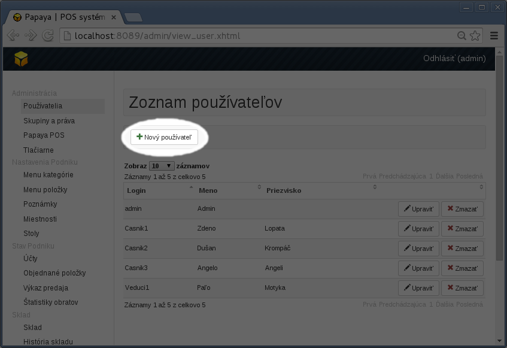
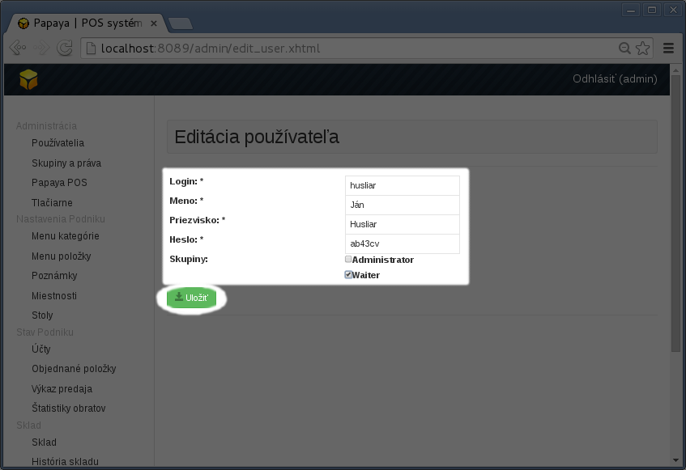
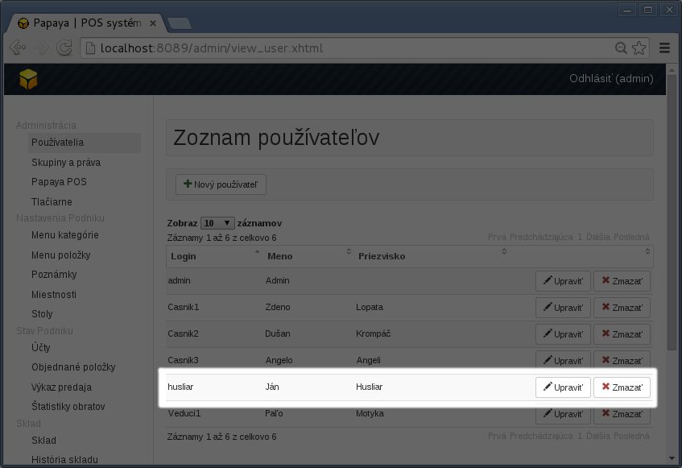

Oprávnenia a používatelia
Papaya Mini
- Správu používateľov pre Mini verziu pripravujeme.
- V súčasnosti je v Mini verzii prednastavený jeden používateľ - administrátor, ktorý má oprávnenie na všetky operácie.
Papaya Pro
Používatelia a ich oprávnenia sa spravujú cez web administračné rozhranie - WebAdmin.
Používatelia
- Používateľovi sa oprávnenie priamo nepriraďuje.
- Používateľ môže byť pridaný do jednej alebo viacerých skupín. Používateľ má potom oprávnenia podľa toho, do akej skupiny je priradený.
Skupiny a oprávnenia
- Skupiny majú názov a zoznam oprávnení.
- Počet skupín nie je obmedzený. Prevádzkar si ich môže vytvoriť koľko potrebuje (čašník, vedúci smeny, a pod.).
- Skupinu admin/administrátor nie je možné vymazať. Táto skupina má nastavené vždy všetky oprávnenia.
Postup pre pridanie nového používateľa
Prihlásiť sa do WebAdmina
V menu Zoznam používateľov kliknúť na ikonku Nový používateľ.

- Vyplniť prihlasovacie údaje (login, meno, priezvisko, heslo). Nezabudnite používateľa priradiť do skupiny!

- Po kliknutí na Uložiť sa nový používateľ vytvorí pridá do zoznamu. Možno ho neskôr vymazať alebo upraviť.

Papaya Oberon
V tejto verzii funguje Papaya výlučne iba ako Mobilný čašník. Všetky nastavenia je nutné robiť cez systém Oberon. Papaya si žiadne dáta neuchováva, iba zobrazuje dáta uložené v Oberone. Pre informácie o správe používateľov prosím kontaktujte podporu Oberonu.